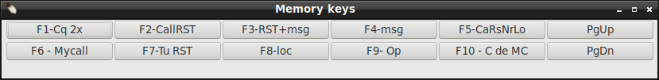

|
WARNING!
Backup your data often! BACKUP your log directory at the end of EVERY session!
All that you need to backup and store in a safe place is the log database directory
located in the ~/.config/cqrlog/database folder, or you can enable the autobackup function
in Preferences. This autobackup function creates an ADIF file with a backup of your log.
|
CQRLOG for LINUX by OK2CQR & OK1RR

CW messages
Assuming that your CW interface is properly set up and working,
you can add and/or edit your CW messages.
Set up your CW messages via Preferences/CW inteface/CW messages button.
You can also access CW messages from the top menu of the New QSO window.
Click on the 'File' item and select CW Messages.


CW messages will be sent when you press the corresponding F-key(s) or click message buttons in Memory keys or CW type windows.
You can set up to 10 predefined messages in two sets.
Set1 "S&P" is always default. Set2 "Run" is active when contest window is opened and checkbox "S&P" is NOT checked.
Use buttons Save and Load for save/load both sets to/from file.

There are some predefined macros which you can use in your messages:
- %mc - my callsign
- %mn - my name
- %mq - my qth
- %ml - my locator
- %r - rst send
- %rs - rst send sends N instead of 9
(sends also 0 as T, but that does not exist in normal report)
- %n - name
- %c - callsign
- %h - greeting GM/GA/GE calculated from the %c station location time
- %xn - contest exchange serial number
- %xns - contest exchenge serial number sends 9->N and 0->T
- %xnr - contest exchange serial number received
- %xnrs- contest exchenge serial number received sends 9->N and 0->T
- %xm - contest exchange message
- %xmr - contest exchange message received
- %xrs - full contest exchange RST+SerialNR+Message sends 9->N and 0->T.
(May be used always instead of %rs as if serNR and Message are empty just sends plain report.)
- + or - in macro text will increase/decrease CW speed by 5WPM/one mark.
"TU +++599--- 001" will send 599 with 15WPM higer speed.
Hamlib keyer has some limitations with this:
1) Version of Hamlib must be at least Hamlib 4.1~git Last commit 2020-10-20 03:22:59 2020 +0000 SHA=8a769c
2) Do not use space(s) between text and +(or -) rigctld will add them I.E. "TU+++599---001"
3) Speed change works only with BKIN mode (not F-BKIN) and at the moment new Icom rigs (tested only ic7300)
4) Does not work if Hamlib CW buffering is used
|

Send hex bytes to keyer. Will send hex bytes to Winkeyer or K3NG allowing non charcter bytes to be sent from Cqrlog in case there sudden need to change some of keyer's settings.
Consult your keyer's manual to find needed commands.

Memory keys form has buttons PgUp and PgDn that are not configurable. They alter CW speed in same way as keyboard keys PgUp and PgDn that some, specially laptop computers, may not even have.
When using Memory keys-form with mouse, or keyboard, you are able to lauch memories by mouse click or by F-key press from keyboard keys. Same with PgUp and PgDn, both are working, keys and mouse click.
You can select what happens when Memory keys-form is active and ENTER (also called Return) key is pressed, repeat last clicked memory (send focused button text)
, ignore it (do nothing) or save qso, by selecting that with ENTER section radio buttons in CW Messages definition form.

Another form CW type is a powerful keyboard keyer with 3 operation modes:
- letter mode - the character of the corresponding keyboard key is
sent immediately on pressing the key
- word mode - a whole word is typed, sending starts after pressing
of the spacebar
- word mode, first word in letter mode - a combination of above.
The keyer begins in letter mode to avoid unneccessary delays, if you type fast enough
it switches to word mode
These modes are common on professional keyboard keyers.
CWTyping area allows paste (copy in editor/paste to CWType) and drop (select in editor and drag with mouse left button pressed and drop on CWType area).
NOTE! CW sending has limited buffer space depending keyer type and rig model. Be aware that pasting a very long text to CWType area may lead to CW keyer buffer overflow. When Hamlib keying is in use it will send words under 10 characters as one command, but if text to be sent is longer it will send all letter by letter (1 chr per one command).
This is tested to work with IC7300. Same should happen with Kenwoodother rigs and HamLib keying, but this is not tested and may not work in same way.
Same warning with manual typing in word mode: If your typing speed is faster than cw sending you may hit send buffer limit sooner or later.
Switching radios while CW sending is going on can cause unexpected results !
Always wait that CW message has finshed before switching radios as it will also switch CW keyers.
Always wait that selected radio shows frequency in TRXControl before sending a CW message or start using CW Type.
The keying speed can be changed with PgUp (QRQ) and PgDn (QRS) keys
in 2 WPM steps when NewQSO-form is active. In the CW type-form when cursor is in text typing area same PgUP/PgDN keys work. Speed can also be changed with the small arrow
buttons to the right of the speed display. The actual speed is always displayed in the status line of the New QSO-form and in CWType-forms speed selector.
The ESC key stops running transmit. This may not be supported in all keyers and rigs and is mainly usefull when using word mode or pasted/dropped text.
With HamLib keyer ESC sends hex byte 0xFF as message. Icom rigs halt CW with this. An empty message with Kenwood rigs should use this to stop sending.
Be aware that this has tested very little.
NOTE! Some special characters like Ä (A with dots) etc. May not be supported in CWType direct from keypress. For example Hamlib keying with Icom rig sends A with dots when typing 3 characters ^AA and you have to find out the way suitable for your setup.

Setup howtos for both cwdaemon and
Winkey USB are available.